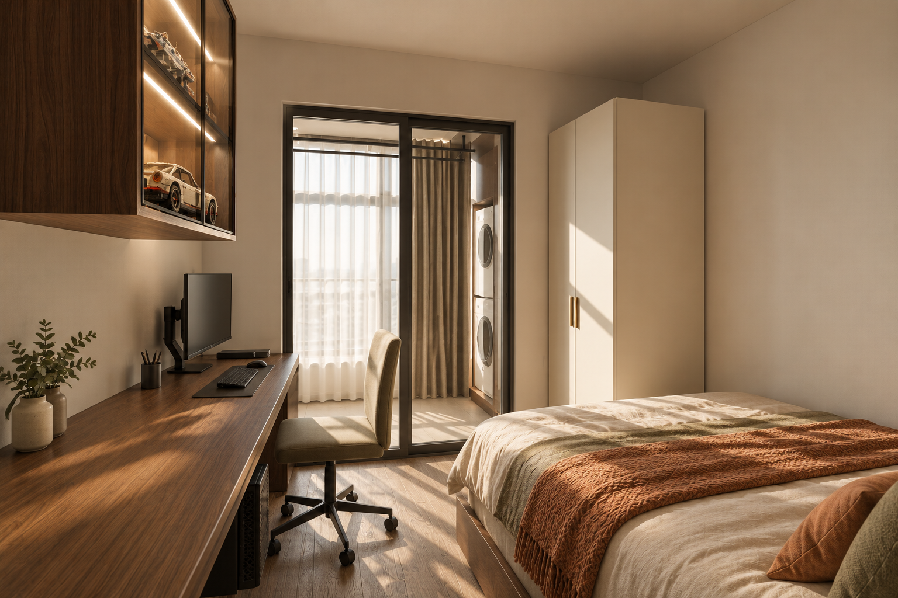
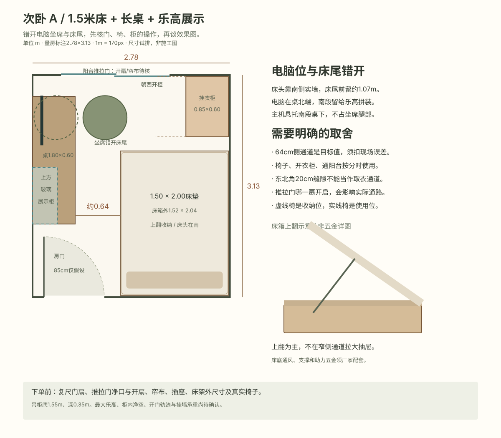

1.80 × 0.60
长桌分成两段
北端放单屏与键鼠，南段留拼装台面。主机悬托南段桌下，北端不做挡腿地柜；显示器支架另核桌边夹装。
WORK · SLEEP · DISPLAY / REVISION 05 / 2026.10.30
床头靠南侧实墙，电脑桌沿西墙，坐席放在靠阳台的一端。桌子南段用于拼装与展示；床下存被褥，东北角留一个常用挂衣柜。

AI精修示意，参考按尺寸搭建的模型，不等于精确三维重建。图中家具细节与净空须以尺寸试排及最终复尺为准。
北端放单屏与键鼠，南段留拼装台面。主机悬托南段桌下，北端不做挡腿地柜；显示器支架另核桌边夹装。
床箱目标外1.52×2.04m，上翻储物为主；不把大抽屉拉进侧通道。通风支撑、五金和真实外尺寸须厂家确认。
玻璃吊柜放桌面南段上方，高0.80m、柜底1.55m，避开电脑坐席。按最大乐高核净空和放入路径，灯带含在柜价中。
01 / SCALE BEFORE STYLE

图上比例统一。固定家具边界无相交，座椅示意框不碰床；这不代表真实椅子、门窗、衣柜开门和人体操作已通过现场验证。
原来的横向床加浅柜没有电脑位；只把长桌搬到床对面，中段64cm也不足以当作独立拉椅区。因此保留床宽、改南床头，把坐席移至床尾北侧。C衣帽间本轮保持原功能，没有擅自占作书房。
房门净宽和铰点、阳台推拉门实际开扇及净口、帘布收边、踢脚与插座、真实床架外尺寸、真实椅子的底盘/扶手/转动与后退包络。小衣柜朝西开，柜南端20cm缝隙不作为站人通道。吊柜核墙体固定、承重、净空及柜门轨迹。
暂按单台27–32英寸屏、独立主机和中型乐高。未取得具体屏幕、机箱、最大模型及座椅尺寸，不保证双屏、大电竞椅或大型模型能直接放下。
此部分需要密码，请前往全屋预算页面解锁。
输入密码查看预算 →